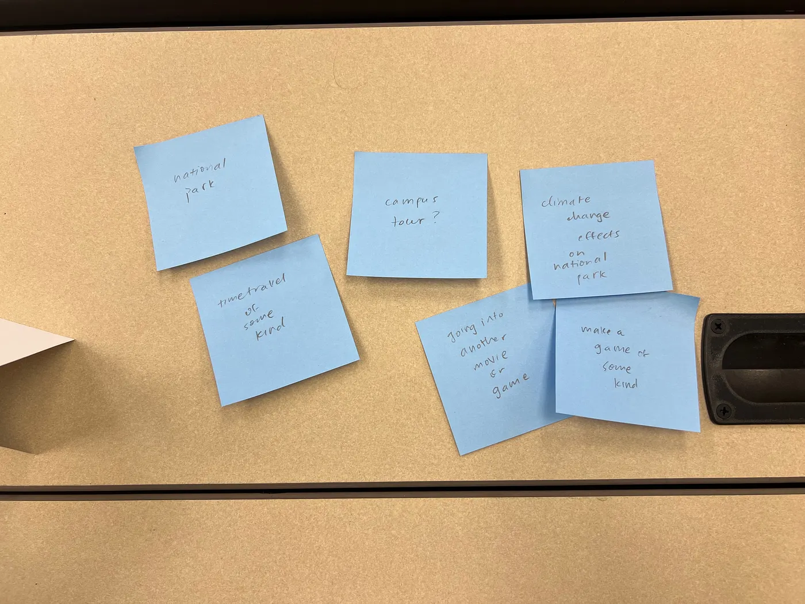

Sprint 3: Design for Another World
Introduction
In this sprint, we were challenged to create a virtual reality that could be used as a medium to transport users to another world. We chose to explore how a familiar place, such as Davidson College’s Lake Campus, would look when transformed by extreme weather and climate change, showing how it might look across different time periods.
Ideation Process
We began with an in-class post-it note brainstorming session, exploring several directions.
We considered many different avenues:
- Campus tour in different seasons
- National park with climate change impacts
- Time travel to past or future worlds
- Game-like explorations and abstract spaces
After brainstorming, we discussed all the possibilities and chose to merge our strongest concepts into a cohesive design.
Problem Definition / Grounding Goal
We wanted to use VR to help users emotionally connect with the impact of climate change on familiar environments. We hoped that by visualizing extreme seasonal change, we could highlight both beauty and fragility.
We later adapted this goal into one that was more broad. We chose to use VR to allow the users to view familiar spaces, such as the Lake Campus, in new and inventive ways, not necessarily focused entirely on the effects of climate change. VR provides the sense of “being there,” making abstract climate concepts tangible and personal.
Design Objective
Our objective was to make users feel transported, creating emotional impact through visuals, sound, and atmosphere.
We wanted to collect images in a space that was easily accessible, as we discovered that it was difficult to gather 360-degree VR imagery of national parks and other public areas. Instead, we chose to collect our own by using a friend’s camera to capture images of Davidson’s Lake Campus.
Concept Overview
Our experience is a 360° VR time-travel tour through seasons and eras. For each season, we wanted to visualize its past, present and future at the lake. These were the design notes we took when we met as a group.
- Spring (Ellora): Renewal and bloom
- Summer (Mali): Evolution through time — from dinosaur-era greenery → modern day → urbanized future
- Fall (Chetna): Transition and decay
- Winter (Kyle): Frozen stillness, visualizing extreme cold
Implementation
To bring our concept to life, we used a combination of AI video generation and VR coding tools.
- Prompt Engineering and Generation with ChatGPT: We collaboratively created a set of text prompts describing each scene (for example, “Lake Campus during an Ice Age winter,” or “Lake Campus in a futuristic urbanized summer”). We fed our ideas into ChatGPT and asked it to expand on them so that we could have more detailed prompts. Each prompt emphasized environmental details, lighting, and atmosphere to align with our design goals.
- Video Creation with Veo: We then fed these prompts into Veo, Google’s generative video model, to create short cinematic clips representing each season and time period. The output videos provided our visual foundation for the VR scenes.
- Integration into A-Frame: After generating the visuals, we uploaded the videos into an A-Frame project, where we constructed an interactive virtual environment. Using HTML and A-Frame components, we overlaid navigation elements such as a home button to return to the starting scene, scene selection buttons for each season, and environmental cues for immersion.
- Collaboration and Iteration: Each team member customized their own seasonal scene, experimenting with layout, lighting, and interface placement before merging everything into a single cohesive project. We collaborated on a GitHub repository which allowed us to work collaboratively and also independently.
Individual Design Process Reflections
Dashboard/Car
Throughout our entire design process, we wanted to ensure that our immersive VR experience felt like an interactive story for the user, rather than just a VR simulation of our own imaginative ideas for Lake Norman. To that end, we spent some time brainstorming ideas. One of our ideas was to start the user in a time machine, where they could select both the era and the season and would be transported to the desired place. Our next idea was to have the user in the backseat of a car (like a taxi), in which they would be driving to the desired destination (i.e., Lake Norman). In this idea, we thought that the driver of the taxi might ask the user what period of time and what season they would like to travel to, just as if the user had entered a taxi in real life.
We decided to go with our second idea, and so we began to build the simulation of a car driving down the road in A-frame, using 3D-geometric elements. The reason we ultimately decided to build this scene entirely in A-frame instead of using Google Gemini/Veo to generate more realistic 360 videos was because we were not able to easily procure a 360 photo of a person in the backseat of a taxi. Nonetheless, we were able to build the desired scene entirely in A-frame.
Aside from the taxi and the movement of the road, we also included a reticle (a white, circular crosshair that is centered in the user’s point-of-view), which would allow the user to interact with the chat boxes which prompt the user to enter their desired location. We were also able to integrate the chat boxes which would allow the user to travel to their desired season and era in time. Ultimately, this scene would serve as the framework for our simulation, designed to make the user feel like they were part of an immersive travel experience to the various different scenes of Lake Norman.
Click here to view full post